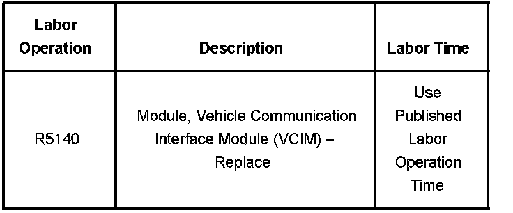
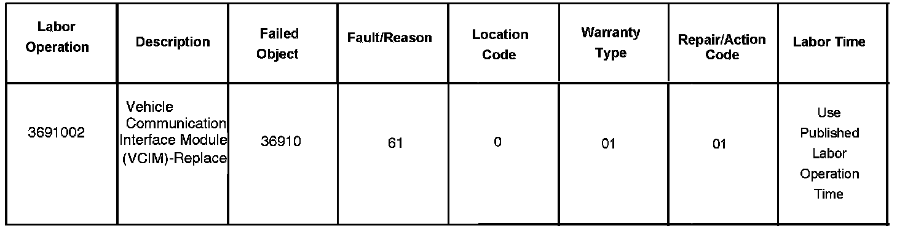

OnStar(R) - Incorrect GPS Position Reported During Call
Bulletin No.: 02-08-46-006CDate: January 08, 2008
INFORMATION
Subject:
Incorrect OnStar(R) Global Positioning System (GPS) Location Reported During OnStar(R) Call
Models:
2000-2008 GM Passenger Cars and Light Duty Trucks (including Saturn)
2003-2008 HUMMER H2
2006-2008 HUMMER H3
2005-2008 Saab 9-7X
with OnStar(R)
Supercede:
This bulletin is being revised to add model years. Please discard Corporate Bulletin Number 02-08-46-006B (Section 08 - Body and Accessories).
A small number of the above-mentioned vehicles may exhibit a condition in which the vehicle reports an inaccurate location to the OnStar(R) Call Center. This condition can only be identified via a button press to the OnStar(R) Call Center by the customer. Call Center personnel will be able to identify this inaccurate location condition. Customers will then be notified through the mail by OnStar(R) if their vehicle exhibits this condition. Once this condition has been identified OnStar(R) will instruct the customer to return to the dealership to have this condition corrected.
It is not necessary to reconfigure the vehicle after the following procedure.
In order to correct this condition you must cycle power to the OnStar(R) system. This can be done by either removing the fuses powering the OnStar(R) system or disconnecting the OnStar(R) module (VCIM) from the vehicle. As a last resort you can disconnect the vehicle's battery.
The power needs to be removed from the system for approximately 15 minutes.
After completing this procedure the vehicle should be taken to an area with an unobstructed view of the sky. The vehicle should be kept running for approximately 10 minutes to allow the vehicle to reacquire the global positioning system (GPS). Then contact the OnStar(R) Call Center via the blue OnStar(R) button and ask the advisor to verify the GPS position.
If the OnStar(R) advisor still has an inaccurate GPS location refer to the Navigation Systems and Cellular Communications sub-sections in the Service Manual in order to diagnose and repair the concern. If the normal diagnostics lead to module replacement you will need to contact Technical Assistance (TAC) and choose the OnStar(R) prompt. GM OnStar(R) TAC will assist in the diagnosis and if appropriate order a replacement part. Replacement parts are usually shipped out within 24 hours and a pre-paid return package label will be included for returning the faulty part. By returning the faulty part you will avoid a significant non-return core charge.
Warranty Information (excluding Saab US Models)

For vehicles repaired under warranty, use the table.
Warranty Information (Saab US Models)

For vehicles repaired under warranty use, the table.

Disclaimer